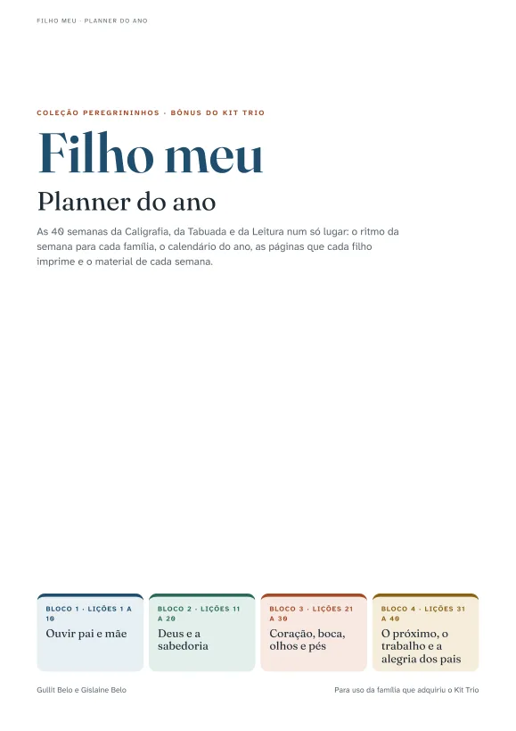
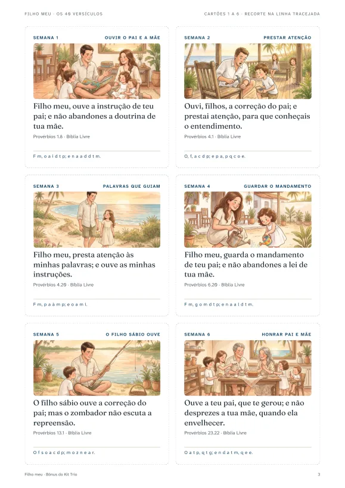
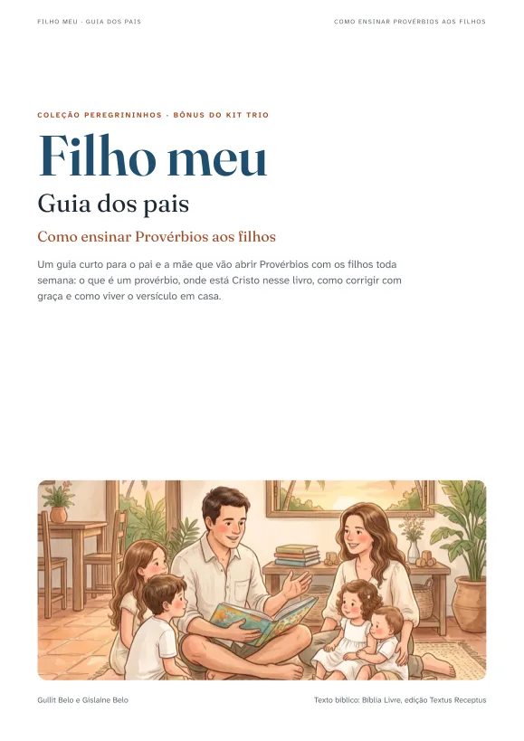
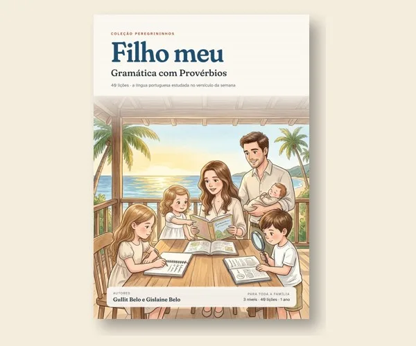
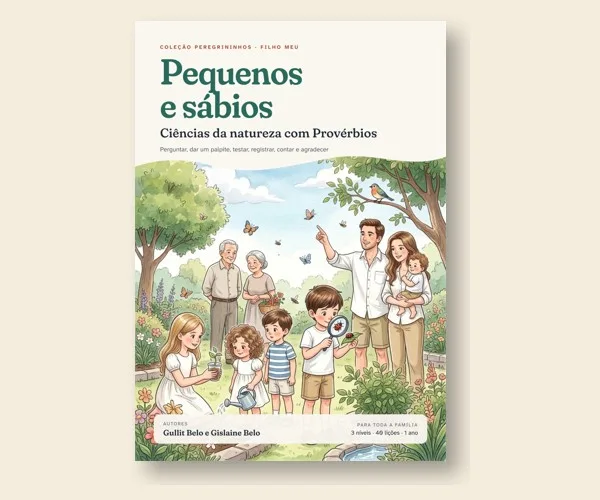
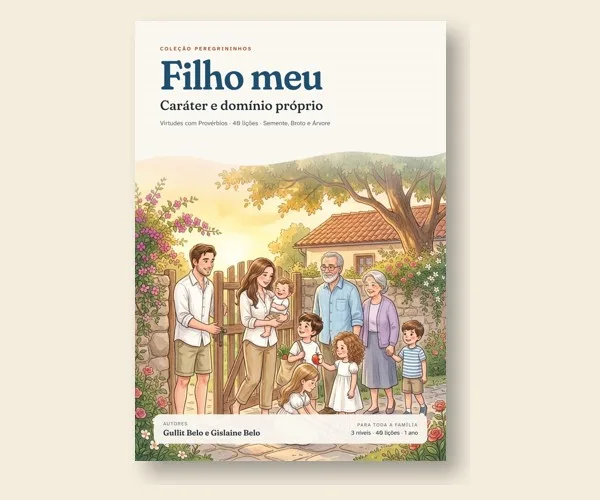
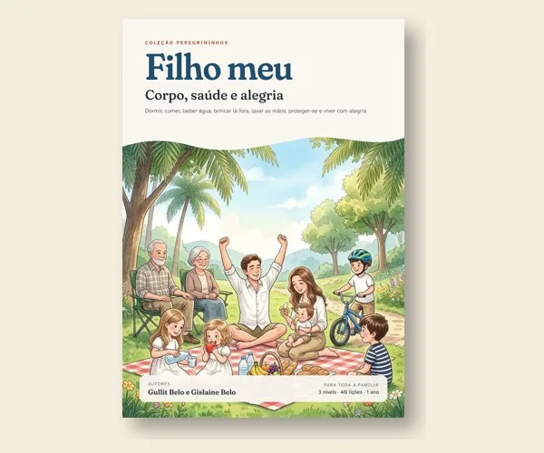

Coleção Peregrininhos, da Editora Nadere Reformatie
Filho meu
Caligrafia, tabuada e leitura com Provérbios, para a família inteira aprender junta.
Três livros ilustrados, 40 semanas planejadas, um versículo por semana. O pai abre a Bíblia uma vez, e o filho de 4 anos traça, o de 6 copia palavras e o de 9 escreve o versículo de memória.
Os três livros por R$ 139 até 7 de novembro (depois, R$ 179), com a Semana 1 grátis para experimentar.


Você conhece esta cena?
Sábado à noite. Um filho aprendendo a segurar o lápis, outro juntando as primeiras sílabas, o mais velho às voltas com a tabuada.
Três materiais, três planejamentos, e o culto doméstico de um lado, as matérias do outro. “Filho meu” nasceu do primeiro versículo em que Provérbios mostra um pai ensinando o filho, e da nossa própria mesa, com quatro filhos de idades diferentes. Queríamos a Palavra no centro da semana e cada criança aprendendo no seu passo, sem que a mãe ou o pai precisassem montar três aulas.
Para quem é
- Para quem educa os filhos em casa e tem crianças de idades diferentes.
- Para quem quer reforçar em casa a escrita, a tabuada e a leitura dos filhos que estão na escola, em 15 a 20 minutos por dia.
- Para famílias cujos filhos vão à escola e querem um tempo de estudo depois da aula com propósito: reforço do que se aprende e formação do caráter, no mesmo período.
- Para pais que querem reservar um tempo com os filhos para ensinar as virtudes bíblicas, com a Escritura aberta e o livro de Provérbios como guia.
- Para quem já tem uma rotina de estudos que funciona e quer acrescentar estratégias e conteúdos, sem abandonar o que já faz.
- Para quem deseja a Escritura no centro do estudo.
- Para quem valoriza material bem feito e fiel à fé reformada.
- Para quem não tem tempo de planejar e quer abrir o livro e começar.
Talvez não seja para você se
- procura um currículo de todas as disciplinas: a coleção cobre escrita, matemática e leitura;
- precisa de material alinhado série a série com a escola;
- prefere letra de forma em vez da cursiva.
Como funciona a semana
O planejamento já vem pronto. É abrir o livro na lição da semana.
Todos juntos: a ilustração da semana, o versículo, uma conversa curta, perguntas para cada idade e oração.
A criança faz as páginas do seu nível nos três livros: caligrafia, tabuada e leitura.
A família recita o versículo. O filho maior escreve de memória. Na tabuada, o “Lembra?” e o desafio; na leitura, o registro de fluência.
Em 40 semanas, a família terá decorado 40 versículos de Provérbios, e cada filho terá dado um ano de passos na escrita, na matemática e na leitura.
Os três livros, 821 páginas
Os três usam o mesmo versículo da semana, por isso conversam entre si.
Caligrafia cursiva com Provérbios
A letra cursiva do primeiro traço até a carta escrita à mão: traços, minúsculas, maiúsculas, números, palavras, frases, o versículo inteiro e, no fim, uma carta para o pai.
- Semente: traços, letra gigante e desenho.
- Broto: letras cursivas, palavras e um trecho do versículo.
- Árvore: o versículo inteiro, copiado de segunda a quinta e de memória na sexta.
- Alfabeto de referência, pautas extras e certificados.
Tabuada com Provérbios
A multiplicação e a divisão entendidas antes de decoradas.
- Primeiro com objetos, depois com desenho, só então com números.
- Estratégias que dão sentido às contas: o dobro, o “10 menos 1” da tabuada do 9.
- “Lembra?”: revisão espaçada do que veio semanas antes.
- Tabela pitagórica, gabarito, 45 cartões para recortar, desafios e certificados.
Leitura e interpretação com Provérbios
Oitenta textos originais para ler, reler e entender.
- Contos da família das ilustrações, relatos bíblicos recontados, fábulas nordestinas, poemas e cordel, cartas e textos informativos.
- Broto lê um texto curto três vezes e registra o tempo.
- Árvore mede as palavras por minuto, responde seis perguntas de três tipos e escreve.
- Uma habilidade de leitura por semana e gráfico de fluência.
Três níveis na mesma lição
As idades são referência. Cada filho fica no nível em que está e pode mudar durante o ano.
Traços, letras grandes, contar com figuras, ouvir histórias e responder apontando e desenhando.
Letras cursivas e palavras, primeiras tabuadas com objetos e desenhos, textos curtos lidos três vezes.
Versículo inteiro, tabuadas completas e divisão, textos longos com interpretação e escrita.
Veja por dentro
Páginas reais da primeira lição, nos três livros. Arraste para o lado.


Por que o método funciona
Juntamos práticas com boa base em pesquisa e as colocamos a serviço da casa.
Rever em intervalos crescentes guarda por mais tempo do que repetir tudo no mesmo dia.
Ler o mesmo texto algumas vezes melhora a fluência, e a fluência ajuda a compreensão.
A sequência do ensino de matemática de Singapura faz a criança entender a conta antes de decorá-la.
“Está no texto”, “pense e procure” e “com suas palavras” ensinam a voltar ao texto e a pensar sobre ele.
O modelo vem primeiro, depois a cópia, e por fim a escrita sozinha.
A fé que sustenta a coleção
Provérbios não é um manual de boas maneiras. É a voz de um pai que ensina o filho a temer ao Senhor, e o temor do Senhor é o princípio da sabedoria.
Por isso as conversas da semana apontam para Deus e para a graça, e não apenas para o comportamento. A coleção parte da fé reformada, com cuidado para não transformar cada lição numa lição de moral.

Quem coordenou a coleção
Gullit Belo e Gislaine Belo são casados e pais de quatro filhos. “Filho meu” nasceu na mesa da família, da necessidade de ensinar crianças de idades diferentes ao mesmo tempo sem deixar a Escritura de lado. Eles idealizaram e coordenaram o projeto da coleção.
Sobre a editora
A Editora Nadere Reformatie publica obras de fé reformada. O nome remete à Reforma Posterior holandesa, que buscou levar a doutrina da Reforma para a vida diária, a família e a piedade. “Filho meu” abre a Coleção Peregrininhos, dedicada à educação das crianças.
@editoranaderereformatie, www.editoranaderereformatie.com.br
Três bônus no Kit Trio, sem custo
Quem leva o Kit Trio recebe também, na mesma área de membros, três materiais feitos para o dia a dia de quem usa a coleção.

Bônus 1, 16 páginasPlanner do ano
Quatro jeitos de usar o kit (ensino em casa, depois da escola, reforço e tempo das virtudes), o calendário das 40 semanas, as páginas exatas que cada filho imprime em cada semana e o material da Tabuada.

Bônus 2, 12 páginasOs 40 versículos
Quarenta cartões com a cena de cada lição e a caixa de memória para revisar os versículos o ano todo, com divisórias, pôster e o quadro “Já sei de cor”.

Bônus 3, 9 páginasGuia dos pais
Como ensinar Provérbios aos filhos: o que é um provérbio, Cristo como a sabedoria de Deus, a correção com graça, o exemplo dos pais e o culto doméstico.
Um ano inteiro de escrita, matemática e leitura
Em PDF, para imprimir em casa só as páginas que cada filho vai usar.
Preço de fundador até 7 de novembro
Kit Trio “Filho meu”
Os três livros, 821 páginas, 40 semanas.
- Caligrafia cursiva com Provérbios
- Tabuada com Provérbios
- Leitura e interpretação com Provérbios
- Cartões de tabuada, certificados, pautas extras, gabarito e respostas
- 3 bônus: Planner do ano, Os 40 versículos e Guia dos pais
Pagamento pela Kiwify, em PDF, com acesso por e-mail logo após a confirmação.
Ou um livro por vez
A família compradora pode imprimir as páginas de atividade para os próprios filhos, quantas vezes precisar, inclusive para os mais novos nos anos seguintes.
Quer o livro impresso? Mande uma mensagem no Instagram @mentoriagb; se houver procura, abrimos uma pré-venda.
Escolas e igrejas: há licença institucional. Fale conosco pelo mesmo Instagram.
Garantia de 7 dias. Conheça o material com calma. Se não for o que sua família precisa, peça o reembolso integral.
Experimente antes
A coleção está sendo lançada agora, por isso ainda não há depoimentos. Para você conhecer na prática, a primeira semana completa dos três livros é grátis.
Baixe grátis a Semana 1
A lição 1 (Provérbios 1.8) dos três livros, nos três níveis. Imprima, use com seus filhos e decida com calma. Deixe seu nome e e-mail, e o PDF baixa na hora.
Se não abrir, clique aqui para baixar a Semana 1. Comece na segunda-feira, com a abertura em família.




Mais nove livros “Filho meu” à venda
Gramática, escrita, palavras, ciências, medidas, lógica, caráter, saúde e finanças, com o mesmo versículo da semana. No lançamento antecipado, com 20% de desconto.
Perguntas frequentes
O material é impresso ou digital?
Nesta primeira edição, os livros são em PDF. Você imprime em casa ou numa gráfica rápida, só as páginas que for usar. Se houver procura, pensamos numa edição impressa.
Posso imprimir as lições mais de uma vez?
Pode, e recomendamos. A família que comprou pode imprimir as lições quantas vezes precisar: para cada filho, para refazer uma semana que ficou difícil ou para repetir uma lição depois de algum tempo e ver o quanto a criança avançou. Pedimos apenas que o arquivo não seja repassado nem impresso para outras famílias.
Tenho um filho só. Vale a pena?
Vale. O mesmo material acompanha a criança por vários anos: ela começa no nível em que está hoje e, quando estiver pronta, passa para o seguinte, no mesmo livro. Uma criança de 4 anos pode fazer o Semente agora, o Broto depois e o Árvore mais adiante, sempre com os mesmos versículos.
Serve como reforço para quem já estuda numa escola?
Serve. As lições são curtas e podem ser feitas em casa, em poucos minutos por dia, para firmar a letra cursiva, a tabuada e a leitura. Como não seguem um ano escolar específico, encaixam em qualquer época e acompanham o ritmo da criança.
Para que idade é?
De 3 anos em diante, em três níveis: Semente (3 a 5), Broto (5 a 7) e Árvore (7 em diante). A idade é só uma referência: coloque cada filho no nível em que ele está, e ele pode mudar de nível durante o ano.
Meu filho tem 10 anos. Serve?
Serve, se ele ainda precisa firmar a letra cursiva, a tabuada ou a fluência de leitura: o nível Árvore foi pensado para isso. Se ficar em dúvida, a Semana 1 grátis ajuda a decidir.
Preciso imprimir o livro inteiro?
Não. Imprima só as páginas do nível de cada filho. As páginas de abertura podem ser lidas na tela, e o sumário mostra onde começa cada lição.
Quanto tempo leva por dia?
A abertura de segunda-feira leva cerca de 10 minutos. As atividades diárias levam de 15 a 30 minutos por criança, somando os três livros.
Preciso comprar os três livros?
Não. Cada livro funciona sozinho. O kit vale a pena porque os três usam o mesmo versículo e, juntos, formam o trio básico de um ano.
Serve para escola ou igreja?
Sim. Para turmas, oferecemos uma licença institucional, porque a licença familiar vale só para os filhos de quem comprou. Fale conosco pelo Instagram @mentoriagb.
Como recebo o material?
Assim que o pagamento é confirmado, você recebe por e-mail o acesso aos arquivos em PDF. No Pix, a confirmação costuma ser imediata.
Quarenta semanas e quarenta versículos, com a família à mesa
“Filho meu” foi feito para ajudar o pai e a mãe a fazer o que Provérbios descreve: ensinar os filhos, com paciência, a cada dia, no caminho da sabedoria.